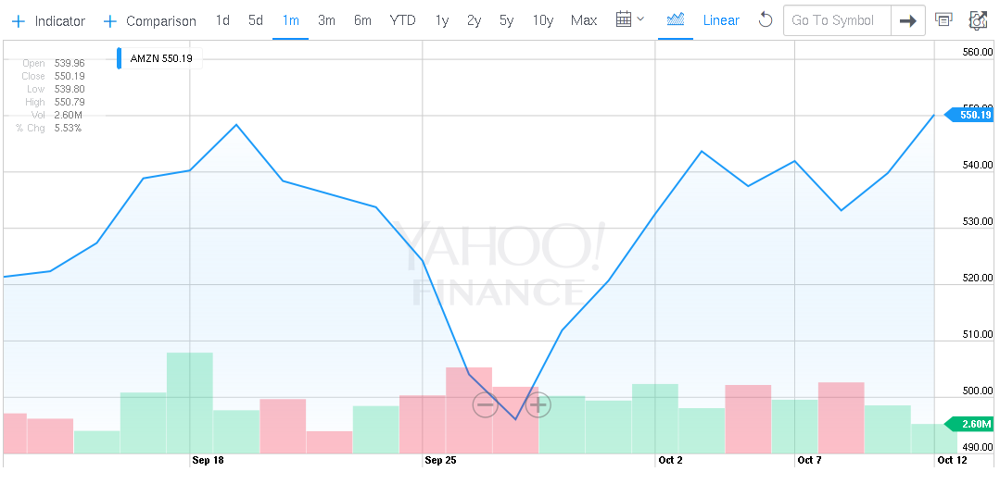

from: 2015
name: inverse layout: true class: center, middle, inverse --- # TimeSeries DataStores **<i>'cuz lost time is never found again</i>** .footnote[by [AbhishekKr](http://abhishekkr.github.io) / [@abionic](http://twitter.com/abionic)] --- ## <i>what will we discuss today?</i> üïê [What](#3) you can do with it? [Why](#16) TSDB? <a href="#3">-»</a> üïù What makes a (good) TSDB? <a href="#25">-»</a> üïû Existing Solutions. <a href="#35">-»</a> --- layout: false .left-column[ <i>elevator pitch</i><br/><br/> ] .right-column[ ## System focussed on data-storage optimized<br/>for time based queries. Some of the largest datasets have strong time components...<br/> like stock market data, server logs, weather data, or even just the temperature in the server room. .footnote[cite: [mongodb timeseries](https://www.mongodb.com/presentations/mongodc-2011/time-series-data-storage-mongodb?_ga=1.68909969.14190264.1442599445)] ] --- .left-column[ TimeSeroes<br/> Database ] .right-column[ - Not a unique problem, any DB can be made to work. - VividCortex reached 332k/sec metrics over 3 MySQL nodes. - It is writing new TSDB, [Catena](https://www.vividcortex.com/blog/2015/06/09/in-case-you-missed-it-catena/) (800k/sec in Beta) - Focussed solutions are to handle scale/queries optimally. - It's like a BigData problem with "pre-structured" data. ] --- ## Analytics .right-column[ Some analysis are simple ] .footnote[<small>cite: <i>(image-courtesy: stackoverflow::analytics)</i></small>] --- .right-column[ But some need correlation of time-series data ] .footnote[<small>cite: <i>(image-courtesy: Spurious Correlations)</i></small>] --- ### Common Time-Series Data for Analysis .footnote[<small><i>(image-courtesy: /var/log)</i></small>] --- ### Interesting Time-Series Data <img src="./slide-images/Histography.png" title="history timeline from wikipedia" style="width:95%; height:95%;"/> .footnote[<small><i>(image-courtesy: [histography.io](http://histography.io/))</i></small>] --- ## Forecasting **Some series just seems random,<br/>but is actually predictable.** <img src="./slide-images/dilbert-random-not-random.gif" title="simple-analytics" style="width:75%; height:75%;"/> .footnote[<small><i>(image-courtesy: dilbert)</i></small>] --- ### Not all predictions are accurate. <img src="./slide-images/need-big-time-sample-data.png" title="simple-analytics" style="width:95%; height:95%;"/> .footnote[<small><i>(image-courtesy: xkcd)</i></small>] --- ### But with enough data, they can be near perfect. .footnote[<small><i>(image-courtesy: xkcd)</i></small>] --- ### Popular Time-Series Data Forecasting.  .footnote[<small><i>(image-courtesy: Yahoo! Finance)</i></small>] --- ### Popular Time-Series Data Forecasting. .footnote[<small><i>(image-courtesy: Yahoo! Finance)</i></small>] --- ### Critical Time-Series Data Forecasting. .footnote[<small><i>(image-courtesy: Google Weather)</i></small>] --- ### Critical Time-Series Data Forecasting. .footnote[<small><i>(image-courtesy: [Environment Canada](http://exp-studies.tor.ec.gc.ca/cgi-bin/clf2/uv_index_calculator)</i></small>] --- ## Why? Many kinds of analysis require keeping track of<br/> multiple factors over a period of time. .right-column[ _Like..._ - [Some `mongod` usages in Industry](http://blog.mongodb.org/post/65517193370/schema-design-for-time-series-data-in-mongodb) - Forecasting (Average, Relevant Value Average, Seasonality Trend, Weighted Avergae, Smoothed Average) ] --- _Why?_ Device Performance Analytics ```remark Example: Finding out pattern of specific time-periods when resource load is more or less. Manage infrastructure costs by using influenced elastic cloud. ``` .slides[ .first[ * [Skyline](http://www.prnewswire.com/news-releases/skyline-innovations-achieves-california-solar-initiative-thermal-program-performance-data-provider-certification-212305521.html) ] .second[ * [Appboy](http://objectrocket.com/blog/customers/appboy-scales-horizontally-with-objectrocket-mongod) - says: `To achieve such specific targeting, we built a powerful analytics engine using MongoDB to store our data. The Appboy platform collections billions of data points each month from our varied customers including photo sharing apps, games, text messaging apps, digital magazines and more. MongoDB is used as our primary data store and houses almost all of our pre-aggregated analytic data. MongoDB's flexible data store easily keeps track of time series data across dimensions, and ObjectRocket has proven to be a great database provider as we've grown to track billions of data points each month.` ] ] --- _Why?_ Decision's impact via Survey Trends ```remark Example: What marketing decisions were taken at what time? State of target customer class economy. Any impact on sale of any influencing data. ``` --- _Why?_ Predicting herd mentality in Stock Exchange ```remark Example: Which public company related event had what impact? Just general trend in competitors stock health co-related with of your own. ``` .slides[ .first[ * <a href="http://financial.mcobject.com/extremedb-financial-edition/market-data/">extremeDB</a> ] .second[ * <a href="https://en.wikipedia.org/wiki/FAME_%28database%29">FAME Database: Forecasting Analysis and Modeling Environment</a> ] .third[ * <a href="http://www.sungard.com/solutions/market-data/market-map/">Sunguard's Market Map</a> ] ] --- _Why?_ Map Medical IoT monitoring with regular health checks ```remark Example: Users average heartbeat co-related with exercise done. Warning based on old health issues with current blood pressure trend. ``` .slides[ .first[ * <a href="https://gigaom.com/2012/04/13/meet-tempodb-a-database-startup-with-an-eye-for-time/">TempoDB description at GigaOM</a> ] ] --- _Why?_ Intrusion Detection Systems ```remark Example: Seasonality of user requests and trend of traffic increase. Significant anomaly in such can be used by IDS to predict attacks. ``` .slides[ .first[ * [Census](http://www.census.gov/retail/marts/www/timeseries.html) ] ] --- #### Daily examples could be - Stock tick information from global stock exchanges. - Precious metals prices captured periodically. - Weather details at a specific long/lat at periodic interval. - Continuous sensor feed from manufacturing machines or oil rigs, solar panels, etc. --- ### TimeSeries information is Data but what makes it challenging to be stored in traditional stores is.. .right-column[ - the volume and speed aspect of data - the sparseness of the information ] --- ### To analyze the data based on the time dimension - keep arrival time of each feed, and - optimize queries by it --- ## What makes a TimeSeries DataStore? Storing and Retrieval of Primary Data Points indexed by their TimeStamps. --- _What more?_ ### What makes it better? - Consolidated Data Points <small class="example"> `sum`, `avg`, `min`, `max`, `endpoints`, <i>a function specific to type of data</i> </small> --- _What more?_ ### What makes it better? - Consistency and Durability suiting to target domain. <small class="example"> Not all.<br/> If it is of life-impacting surveys, monetary transactions or any important prediction. </small> --- _What more?_ ### What makes it better? - Scalable and Performant to fit the required scenarios. <small class="example"> Circular-buffer OR Big-Data || 100s to Millions Records/Sec </small> --- _What more?_ ### What makes it better? - Compressed Contiguous (old) Data Blobs <small class="example"> In wide-row formats when blobs of data are persisted, better compress. </small> --- _What more?_ ### What makes it better? - Reusable (BigData) Analytics Toolset <small class="example"> If utilize HBase/Cassandra backends, can plug-in existing data crunching mammoths. </small> --- _What more?_ ### What makes it better? - Non-Blocking Backups <small class="example"> Timeseries keep coming at `continuous (ir)regular intervals of time`. </small> --- _What more?_ ### What makes it better? - Auto(or default) managed load-balancing. <small class="example"> Scaling up and down need be seamless; remember the data stream is coming. </small> --- _What more?_ ### Popular Types - Relational Database (special schemas) - NoSQL Databases (epoch indexes) - NoSQL Databases (wide tables) - Column Oriented Databases .footnote[columnar dbs: [1](https://medium.com/@hellomichibye/column-oriented-database-introduction-part-1-572e5780aebb), [2](https://medium.com/@hellomichibye/column-oriented-database-draft-part-2-21199a2de18a), [3](https://en.wikipedia.org/wiki/Column-oriented_DBMS)] --- It's not a unique problem and can be done via any database. Just the requirement scenario doesn't fit everywhere equally. The different solutions are not cuz of incapability of existing databases but of scale in which data might be written, read and analyzed. Which is of scale. A BigData problem where data is pre-structured and hence can be dealt more intelligent alogrithmic way. - Normally large volumes of data is pushed in at steady pace. Buffer writes not always help. - Spark + Cassandra by DataStax for TSDB. - VividCortex has reached 332k/sec metrics over 3 servers (each 8CPU,26GB RAM) over their MySQL implementation. Can't Ad-Hoc query TimeSeries data. - Cacti has been using MySQL to store such data forever. .footnote[[datastax article](https://academy.datastax.com/demos/getting-started-time-series-data-modeling)] --- ## Existing Solutions - majority of these are <i>opensource</i> and 'm <i>biased</i> --- _Existing Solutions_ ### RRDTool - One of the earliest and most popular TimeSeries DataStore. - Has persistence, in-memory caching & concurrent tasks. - A circular-buffer based store. Bad at Sparse Metrics. - No partition, replication or atomic integrity. .footnote[[RRD Tutorial](https://oss.oetiker.ch/rrdtool/tut/rrdtutorial.en.html), [Using RRD](https://oss.oetiker.ch/rrdtool/tut/cdeftutorial.en.html), [RRD Beginners](https://oss.oetiker.ch/rrdtool/tut/rrd-beginners.en.html)] --- _Existing Solutions_ ### Graphite - [Carbon](https://graphite.readthedocs.org/en/latest/carbon-daemons.html), twisted powered metrics processing daemon. - [Whisper](https://graphite.readthedocs.org/en/latest/whisper.html), time-series db library based on RRD principles. - Timestamp value is verified for its position while retrieval. - Multi-Archive Storage and Retrieval Behavior. - File per time-series. Doesn't scale well as more file-descriptors per series. --- _Existing Solutions_ ### OpenTSDB - Runs on Hadoop and HBase. _Highly Scalable_. - Since _v2.0_ provides good Plug-in architecture. - Involves lot of moving parts (Hadoop, HBase, Zookeeper). All need to be managed. - DownSampling for graphs; not to feed into calculations. - Scales to millions of writes per second. Horizontal scaling with nodes. - Plug-ins support for Logging, Serializers, Search, Real-Time Publishing, RPC. .footnote[Docker at `petergrace/opentsdb-docker`; [OpenTSDB Overview](http://opentsdb.net/overview.html); [Issues](https://github.com/OpenTSDB/opentsdb/pull/325); [Go pkg](https://github.com/bzub/go-opentsdb)] --- _Existing Solutions_ ### InfluxDB - Series of Measurements + Unique Tagset. Datapoints have fields and timestamp in nano epoch. - No external dependencies. Ordered k/v. - Started with LevelDB, then RocksDB. Default to BoltDB currently (v0.9.1 I think). - WAL to enable BoltDB manage its memory swiftly. - Over HTTP. Useful SQL-ish language for data query. - Had Protobufs now Raw Bytes. ```remark LevelDB: Too many file handles, no online backups, too hard to transfer shard from one server to another. ``` .footnote[[www](http://influxdb.com/)] --- _Existing Solutions_ ### Druid - <a href="https://github.com/druid-io/tranquility">Tranquility</a>: Realtime ingestion from <a href="https://aws.amazon.com/kinesis/faqs/">Kinesis</a> to Druid<br/> - <a href="https://github.com/Quantiply/druid-vagrant">Single Node DRUID cluster</a><br/> .footnote[[www](http://druid.io/); [Lambda Architecture](https://en.wikipedia.org/wiki/Lambda_architecture); [üßëüíªFangjin](https://twitter.com/fangjin); [üßëüíªGiam](https://twitter.com/gianmerlino)] --- _Existing Solutions_ _Druid_ **Query Layer** - RDBMS (MySQL, PgSQL): Scan speed of data was quiet slow. - NoSQL Key/Val (HBase, Cassandra): You often end up doing many pre-computing results. - Commercial (Vertica, Redshift): but customization on FOSS is powerful. --- _Existing Solutions_ ### Netflix's Atlas - Near real-time graphing for operational insights at scale. - Predictable Alerting (like lot less traffic than <a href="http://www.itl.nist.gov/div898/handbook/pmc/section4/pmc435.htm" text="Holt-Winter Exponential Smoothing">predicted</a>). - **Netflix** handles more than 1TB analytics data/day with it. In-memory (complete for 6hrs, roll-ups for 2 weeks). - Persists raw data in S3. Uses Hive to process old data. .footnote[[www](https://github.com/Netflix/atlas); [Wiki: Cost Overview](https://github.com/Netflix/atlas/wiki/Overview#cost); [KairosDB](https://github.com/Netflix/atlas/issues/20)] --- _Existing Solutions_ ### Prometheus - A Service Monitoring System with built-in TSDB by **SoundCloud**. - Has a query language, alerting and visualization. - Data-model as OpenTSDB. Metric names, labelled with key-values. - Can tweak data handled in RAM and Disk (LevelDB). .footnote[[www](http://prometheus.io/)] --- _Existing Solutions_ ### Blueflood - By <i>RackSpace Cloud Monitoring Team</i> for RealTime Analytics. - Auto-purges, not ideal for Batch Tasks on old data. - Uses Cassandra for datastorage.<br/>Optional support of Zookeeper and ElasticSearch. .footnote[[www](http://blueflood.io/)] --- _Existing Solutions_ ### Kdb+ _(commercial)_ - Columnar High Performance DB. Built-in array language 'q' to work directly on data. - Can be used for streaming, real-time and historical data. - OLTP from 100 thousand to 1 million records/second/cpu. OLAP from 1 million to 100 million records/second/cpu. - Popular in Financial Sectors. Customers: `Goldman Sachs, JP Morgan, Deutsche Bank, etc.`. Also in Utilities, Telecom, Pharamceuticals, Oil-n-Gas sectors. - SaaS model over Kdb+ at [TimeSeries.guru](https://www.timeseries.guru/). - 32bit Free for Dev/PoC tasks not commercial. (1GB RAM) .footnote[[www](http://kx.com/documentation.php), [Getting Started, Insight](http://www.kx.com/q/d/kdb+.htm)] --- _Existing Solutions_ ### SiteWhere (community edition) - It runs on MongoDB or Hadoop/HBase. - Provides 'Complex Event Processing' via [Siddhi](https://github.com/wso2/siddhi). - Provides search and analytics via **Apache Solr**. - Connect devices with MQTT, AMQP, Stomp, other protocols. - SaaS; IoT focussed; REST registration; Arduino and Android. .footnote[[www](http://www.sitewhere.org/)] --- _Existing Solutions_ ### TempIQ - Legacy: [TempoDB](https://www.tempo-db.com)`@gigaom`; (commercial) - Focussed on IoT sensors data<br/> for analysis, dashboarding and reporting. - Connect anything with flexible event data model, HTTPs, MQTT. .footnote[[www](http://www.tempoiq.com/)] --- _Existing Solutions_ ### MomentDB/GoShare - TimeSeries arranged as NameSpaced Keys: `httpd:ERROR:2015:10:16:54:45:34 = yada | 2015:10:16:54:57:34:httpd:ERROR = nada` - HTTP and ZeroMQ support for now. ```remark W.I.P. * Optional Datastore Layer (just k/v or namespaced). * Distributed+Optimized Store (Shards, Replicators, Buffers, Compression). * Delegated DownSampler and Predicting Engines. * MQTT support; also MsgPack -or- Cap'nProto. ``` .footnote[[github](https://github.com/abhishekkr/goshare), _something I was working on_, [MQTT](http://mqtt.org/), [MsgPack](http://msgpack.org/index.html), [Cap'nProto](https://capnproto.org/)] --- **It's about TIME.** ### Questions - Ranking of [TimeSeries DBEngines](http://db-engines.com/en/ranking/time+series+dbms) - feedback/contributions: [MomentDB](https://github.com/abhishekkr/momentdb)/[GoShare](https://github.com/abhishekkr/goshare) --- .left-column[ Fin. ] .right-column[ much more advancement and solutions are here now... since 2015 ] .footnote[[Goto Beginning](#1)]